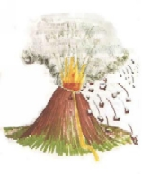

Volcan Popocatepetl
Datos Importantes
¿Que es un Volcan?
Un volcán (del nombre del dios mitológico romano Vulcano) es una estructura geológica por la que emergen magma en forma de lava, ceniza volcánica y gases provenientes del interior de la Tierra. El ascenso de magma ocurre en episodios de actividad violenta denominados erupciones, que pueden variar en intensidad, duración y frecuencia, desde suaves corrientes de lava hasta explosiones extremadamente destructivas. En ocasiones, los volcanes adquieren una forma cónica por la acumulación de material de erupciones anteriores. En la cumbre se encuentra su cráter o caldera. Los volcanes existen en la Tierra, en otros planetas y satélites, algunos están formados por materiales considerados fríos y se denominan criovolcanes. En ellos, el hielo actúa como roca, mientras que el agua fría líquida interna actúa como magma; esto ocurre en la luna de Júpiter llamada Europa. Por lo general, los volcanes se forman en los límites de placas tectónicas, aunque existen los llamados puntos calientes, en donde no hay contacto entre placas. Un ejemplo clásico son las islas Hawái. Los volcanes pueden tener muchas formas y despedir distintos productos. Algunas de las formas más comunes son estratovolcán, cono de escoria, caldera volcánica y volcán en escudo. También existen numerosos volcanes submarinos ubicados a lo largo de las dorsales oceánicas y otros que alcanzan alturas sobre los 6000 metros sobre el nivel del mar, entre ellos, el volcán más alto del mundo, el Nevado Ojos del Salado, en Argentina y Chile, siendo además la segunda cumbre más alta de los hemisferios sur y occidental (solo superado por el argentino cerro Aconcagua) Parte de estos materiales se acumulan alrededor del lugar de salida, formando cerros o montañas que llegan a alcanzar grandes alturas. Los materiales calientes pueden salir por grietas o por el cráter, que es un orificio en la parte superior del cerro o montaiña volciánica, formado por erupciones anteriores.Un volcán es, básicamente, una abertura o ruptura en la superficie de un planeta o en la corteza terrestre; existen algunas zonas geográficas en las que los volcanes realmente dominan el paisaje, elevándose por varios metros encima de la superficie. Los volcanes son un fenómeno muy interesante de la geología y muy atractivos, en caso de que uno esté a salvo de los peligros que puede significar, por su inmenso atractivo.¿Como se forma?
Los volcanes se forman cuando el material caliente del interior de la Tierra asciende y se derrama sobre la corteza. Este material caliente, llamado magma, puede provenir de dos fuentes; del material derretido de la corteza en subducción, el cual es liviano y efervescentedespués de haber sido derretido o, provenir de mucho más adentro de un planeta, de un material que es muy liviano y efervescente debido a que está muy *caliente*. El magma que proviene del fondo llega y se amontona en un reservorio, en una región porosa de rocas en capas conocida como; la cámara de magma. Eventualmente, no siempre, el magma hace erupción hacia la superficie. Fuertes terremotos acompañan al magma ascendente y el tamaño del cono volcánico podría aumentar en apariencia justo antes de la erupción, tal y como se muestra en esta imagen. Frecuentemente, los científicos monitorean la apariencia cambiante de un volcán, especialmente antes de una erupción. Las diferentes razones por las que se forma un volcán son: Mediante columnas de magma ascendente o puntos de calor en la litósfera, como resultante de un proceso de subducción de la litósfera cercana. Cuando ocurre una erupción el magma normalmente se acumula en el cráter y al desbordar el magma inunda toda la zona alrededor de volcán. Entonces el material acumulado de erupciones anteriores, junto con la presión del reservorio de magma dentro de la corteza terrestre, forman una montaña cónica llamada volcán. No existen dos volcanes idénticos. Algunos de ellos apenas si han experimentado una erupción, mientras que otros mantienen una corriente de lava constante y pueden llegar a medir desde unos cien metros hasta varios kilómetros de altura. También hay volcanes en otros planetas como en Venus, que tiene unos 1600 volcanes importantes. En Marte se encuentra el volcán más grande del sistema solar: el Monte Olimpo de 600 kilómetros de base y 27 de altura.Tipos de erupciones volcánicas
Tipos de erupciones magmáticas
 La combinación posible de los factores recién señalados entre sí explica la existencia de varios tipos de volcanes a los cuales corresponden erupciones características. En primer lugar conviene establecer una distinción entre la erupción puntual del magma por una chimenea, y la erupción lineal por una fisura del terreno que puede ser bastante larga. En este último caso se tiene un volcanismo lávico: las erupciones no son violentas y adoptan la forma de gigantescas efusiones de basaltos muy fluidos, cuyas coladas cubren grandes extensiones de terreno alrededor del volcán.
La combinación posible de los factores recién señalados entre sí explica la existencia de varios tipos de volcanes a los cuales corresponden erupciones características. En primer lugar conviene establecer una distinción entre la erupción puntual del magma por una chimenea, y la erupción lineal por una fisura del terreno que puede ser bastante larga. En este último caso se tiene un volcanismo lávico: las erupciones no son violentas y adoptan la forma de gigantescas efusiones de basaltos muy fluidos, cuyas coladas cubren grandes extensiones de terreno alrededor del volcán.
Hawaiana
Presente en volcanes con volcanismo lávico, son nombradas así por los volcanes de las islas de Hawái. Sus lavas son muy fluidas, sin que tengan lugar desprendimientos gaseosos explosivos; estas lavas se desbordan solo cuando rebasan el cráter (por lo que forman un lago de lava) y se deslizan con facilidad por las laderas, formando verdaderas corrientes a grandes distancias y construyendo un cono volcánico con una pendiente muy suave, como se ve en una imagen reciente de la caldera del Halemaumau, en el volcán Kilauea, en la isla de Hawái. Algunas partículas de lava, al ser arrastradas por el viento, forman hilos cristalinos que los nativos llaman cabellos de la diosa Pelé (divinidad del fuego). Son los más comunes en el mundo.Estromboliana
Recibe el nombre del Stromboli, volcán de las islas Lípari (mar Tirreno), al Norte de Sicilia. La erupción es permanente, acompañada de frecuentes paroxismos explosivos, y de vez en cuando de coladas de lava. Ésta es fluida, y acompaña al desprendimiento de gases abundantes y violentos, con proyecciones de escorias, bombas y lapilli, debido a que los gases pueden desprenderse con facilidad, no se producen pulverizaciones o cenizas. Cuando la lava rebasa por los bordes del cráter, desciende por sus laderas y barrancos, pero no alcanza tanta extensión como la del tipo del volcán hawaiano.Vulcaniana
Su nombre proviene del volcán Vulcano en las islas Lípari. Se desprenden grandes cantidades de gases de un magma poco fluido, que se consolida con rapidez; por ello las explosiones son muy fuertes y la lava ácida y muy viscosa que emite se pulveriza, produciendo mucha ceniza, lanzada al aire acompañadas de otros materiales fragmentarios. Cuando la lava sale al exterior se consolida rápidamente, pero los gases que se desprenden, rompen y resquebrajan su superficie, que por ello resulta áspera y muy irregular, formándose lavas cordadas.Pliniana o vesubiana
Reciben su nombre en honor a Plinio el Viejo, que falleció en una, y su sobrino Plinio el Joven, que fue el primero en describirlas. La Erupción pliniana difiere de la vulcaniana en que la presión de los gases en la cámara de magma es muy fuerte y produce explosiones muy violentas. Es distintivo de ellas el que las lavas no sean usualmente basálticas, sino riolíticas, y que exista una gran emisión de pumitas, gases tóxicos y aerosoles. Forma nubes ardientes en forma de pino u hongo, que, al enfriarse, producen precipitaciones de cenizas, que pueden llegar a sepultar ciudades, como le ocurrió a Pompeya y Herculano en el año 79 d. C.Peleana
De los volcanes de las Antillas es célebre el de Monte Pelée, en Martinica por su erupción de 1902, que destruyó su capital, San Pedro. La lava es extremadamente viscosa y se consolida con gran rapidez, llegando a tapar por completo el cráter; la enorme presión de los gases, sin salida, levanta este tapón que se eleva formando una gran aguja rocosa o bien destroza la parte superior de la ladera. Así ocurrió el 8 de mayo de 1902, cuando las paredes del volcán cedieron a tan enorme empuje, abriéndose un conducto lateral por el que salieron con extraordinaria fuerza los gases acumulados a elevada temperatura y que, mezclados con cenizas, formaron la nube ardiente que alcanzó 28.000 víctimas, a una velocidad cercana a los 500 km/h. Como resultado de esta erupción volcánico quedó la formación de un pitón volcánico.Krakatoana
Una explosión volcánica muy terrible, fue la del volcán Krakatoa. Originó una tremenda explosión y enormes maremotos. Este tipo de erupciones se deben a que la lava ascendente es muy viscosa, con una temperatura bastante baja, con lo que va cerrando al enfriarse la abertura del cráter lo cual va acumulando gases que al final ocasionan una gran explosión con la voladura de parte del cráter y, muchas veces, con la formación de un pitón volcánico, es decir, un monte o roque de forma cilíndrica formado por la extrusión de una lava muy viscosa, es decir, poco líquida, que se solidifica rápidamente.Tipos de Erupcion Freatomagmaticas
Erupciones surtseyánas
Una erupción Surtseyana o hidrovolcánica es un tipo de erupción volcánica en aguas poco profundas que causa interacciones entre el agua y lava, llamado así después de su más famoso ejemplo, la erupción y la formación de la isla de Surtsey en la costa de Islandia en 1963.Erupciones submarinas
Las erupciones submarinas son más frecuentes que las de los volcanes que emiten en las tierras emergentes. Sin embargo, suelen pasar inadvertidas porque la presión elevada del agua en las zonas abisales provoca la disolución de los gases y detiene las proyecciones; así es como ningún signo de la erupción puede verse en la superficie del mar. Caso contrario es el de las erupciones en el fondo de los lagos, que es observable en la superficie.Erupciones subglaciales
Las erupciones subglaciales son un tipo de erupción volcánica caracterizada por la interacción entre la lava y hielo, a menudo bajo un glaciar.Erupcion Freaticas
Erupción límnica
Una erupción límnica (también llamada "fenómeno del lago explosivo") es un extraño desastre natural, en el cual el dióxido de carbono erupciona súbitamente de las profundidades de un lago, asfixiando a la fauna, al ganado y a los seres humanos. Tal erupción también puede originar tsunamis en el lago en la medida que el CO2 asciende a la superficie desplazando agua. Los científicos creen que los deslizamientos de tierra, la actividad volcánica o ciertas explosiones pueden desencadenar una erupción de este tipo.Erupción freática
Una erupción freática es aquella que ocurre cuando el magma de un volcán, cuya temperatura es extrema (600 Cº-1170 Cº), se pone en contacto con el suelo o una superficie que contiene agua, la cual se evapora rápidamente causando una explosión de vapor, agua, ceniza, piedras, etc.Actividad
Hay tres tipos de volcanes dependiendo de su actividad:
Extintos:
Como puedes adivinar hablamos de volcanes ya muertos y que no entrarán más en erupción, aunque raramente pueden reactivarse. Antiguamente fueron grandes volcanes y expulsaron magma, pero ahora están "apagados".
Activos:
Son los que están en posibilidad de erupción y que intermitentemente se ponen en marcha. Sus erupciones pueden durar entre minutos y años. Aunque la mayoría del tiempo están en reposo.
Durmientes:
Son una mezcla de los dos anteriores, no están apagados, pero tampoco activos. Han entrado alguna vez en erupción pero en pocas ocasines. Se mantiene calientes, dando "señales de vida" a través de aguas termales o fumarolas.
Datos de Prevencion para el Ciudadano

¿Es peligroso vivir cerca de un volcán?
Los volcanes siempre representan un riesgo y por lo tanto, preventivamente, debemos conocer los peligros que puede presentar el volcán más cercano a nosotros. Sin embargo es poco frecuente que un volcán entre, en actividad sin avisar.
¿Cómo puede dañarme un volcán?

Los daños que genera un volcán, van siempre en función de dos cosas:
El tipo de erupción y su magnitud
El grado de preparación de la población en la zona de riesgo para enfrentarlos.
Los volcanes pueden dañar, poco o mucho, debido a la forma de la erupción.
Cuando son, vapores no hay daño, pero si junto a esos vapores salen grandes cantidades de gases tóxicos, en altas concentraciones puede provocar daños a personas y animales que se encuentren cercanos al crater.
Otra forma es la caida de pedazos de roca ardientes (flujos pirocásticos) que pueden bajar del volcán a gran velocidad como si fueran un líquido y arrasar todo a su paso.
También es posible que se produzcan flujos de lodo porque el calor derrite la nieve acumulada en la parte alta de volcián haciéndola bajar mezclada con tierra y rocas.
En muchos casos el volcán arroja cenizas que, de acuerdo con su tamaño, caerán a diferentes distancias. Cuando se acumulan en los techos frágiles pueden derrumbarlos. Debe evitarse respirar la ceniza, la medida preventiva es el uso de tapabocas o pañuelos.
Si la erupciión arroja lava, entonces el daño puede producirse por su gran calor (incendios) y peso (derrumbes). La velocidad de la lava puede ser lenta o relativamente rápida, eso depende de lo inclinado del terreno y lo espeso de ella.
¿Cómo evito los daños?
Lo más seguro es vivir alejado de los volcanes: si eso no es posible, hay que evitar construir en áreas profundas o lechos de ríos, cañadas, barrancas, etc.
Si vivimos cerca de un volcán, una buena idea para la construcción de nuestra casa es que cuente con techos fuertes de dos aguas, de manera que, si llega a caer ceniza, la inclinación del techo la desaloje.
¿Cuáles son los pasos más Importantes del Plan?
Conocer qué cosas necesitamos hacer para cooperar con el personal de proteccion civil;tener reunidos nuestros documentos más importantes y guardarlos en un solo paquete, listos para tornarlos y salir con ellos si se requiere.
También hay que saber cómo se cierran las llaves de gas y cómo se corta la luz. Al salir todas las puertas y ventanas deben quedar bien cerradas y aseguramos de que tenernos las llaves.
Cuando el personal de protección civil nos invite a participar en un simulacro de evacuación, debemos hacerlo, porque la práctica hace al maestro.
¿Qué hay que hacer si tenemos que evacuar?
Cuando el personal de protección civil dé la señal de evacuación, es porque se considera indispensable hacerlo para proteger tu vida y la de tu familia. Sigue entonces sus instrucciones y mantén la calma, pero asegúrate que tus familiares están presentes en el punto acordado o sitio de reunión para iniciar la evacuación. No pierdas tiempo tratando de llevar pertenencias o animales que sólo dificultan la evacuación
¿Eso es todo lo que tengo que hacer?
Las actividades a realizar durante un simulacro o una, evacuación son muchas, y requieren de que las conozcas. Si deseas participar en labores de organización, apoyo y auxilio, intégrate al Comité Local de Protección Civil.
¿Qué debo hacer al regresar a la casa?
 Antes de entrar a tu casa revísala. Si presenta daños y no estás seguro de su condición pide a las autoridades y/o los cuerpos de protección civil que la verifiquen. Observa si los servicios que tenía antes de la evacuación están en condiciones de seguir funcionando, en caso contrario informa a las autoridades respectivas para su restablecimiento.
Debes permanecer alerta, pues es la mejor forma de realizar nuestra vida cotidiana con la seguridad de que, ante un llamado de emergencia, nuestros actos serán los correctos para apoyar las acciones de Protección civil
Antes de entrar a tu casa revísala. Si presenta daños y no estás seguro de su condición pide a las autoridades y/o los cuerpos de protección civil que la verifiquen. Observa si los servicios que tenía antes de la evacuación están en condiciones de seguir funcionando, en caso contrario informa a las autoridades respectivas para su restablecimiento.
Debes permanecer alerta, pues es la mejor forma de realizar nuestra vida cotidiana con la seguridad de que, ante un llamado de emergencia, nuestros actos serán los correctos para apoyar las acciones de Protección civil